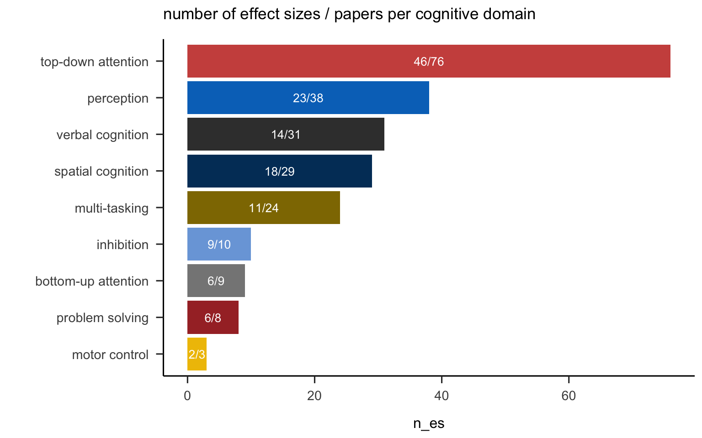

Chapter 3 Data preparation and cleaning
3.1 Raw dataset
included studies
Our thorough literature review identified potentially relevant studies based on predefined keywords.
After screening of eligible studies, the raw data set includes:
- 76 manuscripts
- 111 studies
- 96 independent samples of participants
| manuscripts | effects | es_min | es_max | es_median | es_Q1 | es_Q3 |
|---|---|---|---|---|---|---|
| 104 | 173 | 1 | 6 | 1 | 1 | 2 |
Second, we checked gender distributions of the AVGP and NVGP groups.
There is a predominance of males in both AVGPs and NVGPs.
The green and orange dashed lines define 3 regions on the between-group difference
in the proportion of males:
- The upper left region (above green) contains studies with greater proportion of males in NVGPs
- The bottom right corner (below orange) contains studies with more males in AVGPs
- Between these two lines are studies with less than 25% difference in gender ratio
There is a bias toward having more males in the AVGP group.
Therefore, only studies with a difference in gender ratio less than 25%
will be included in subsequent plots and analyses
These studies are shown with a green contour
When the difference exceeded 20%, authors were contacted in order to obtain data from male-only samples, only if a minimum of 10 participants in each group.
excluded studies
Studies excluded at the data extraction stage for various reasons: gender imbalance, criteria for defining AVGP or NVGPs, etc.# effect sizes per paper - excluded studies only
| studies | effects |
|---|---|
| 36 | 59 |
3.2 Filtered dataset (i.e., matched gender)
Effect sizes as well subject and study characteristics were then extracted from all studies that were eligible.
After exclusion of studies with unbalanced gender, the final data set includes:
- 228 effect sizes
- 74 papers
- 106 studies
- 93 independent samples
| manuscripts | effects | es_min | es_max | es_median | es_Q1 | es_q3 |
|---|---|---|---|---|---|---|
| 74 | 228 | 1 | 18 | 2 | 1 | 4 |
The figure Below shows the number of effect sizes extracted from each manuscript, study or subject sample…
Most studies contributed only few effects.
Notes:
- Studies are embedded in Papers.
- There are cases of overlap in participants across studies and papers
o Studies reported in a paper can involve overlapping samples of participants
o Samples of participants (complete or partial) can be reported in several studies or papers
3.3 Moderators
| Moderator | Level | n |
|---|---|---|
| Cognitive_domain | bottom-up attention | 9 |
| inhibition | 10 | |
| motor control | 3 | |
| multi-tasking | 24 | |
| perception | 38 | |
| problem solving | 8 | |
| spatial cognition | 29 | |
| top-down attention | 76 | |
| verbal cognition | 31 | |
| DV_type | accuracy | 123 |
| speed | 105 | |
| Effect | interaction | 67 |
| main | 161 | |
| Recruitment | Covert | 32 |
| Overt | 194 | |
| Recruitment!? | 2 |
note: problematic levels will be recoded before moderator analysis
3.3.1 Number of effect sizes and studies (i.e. manuscript) in each cognitive domain

3.3.2 List of Tasks and Cognitive Domains
Click to expand!
| Cognitive_domain | examples | measures |
|---|---|---|
| perception | Audio-Visual simultaneity judgment | Group: point of subjective simultaneity (Gaussian fitting) in ms |
| Audio-Visual temporal-order judgment | Group: just noticeable difference (Sigmoid fitting) in ms | |
| Auditory Tone Location discrimination | Main effect : Model fitting : DDM Model Parameters: Integration rate | |
| Auditory Tone Location discrimination - critical duration | Main effect : Model fitting : Model Parameters: beta/rate at which accuracy grows as a function of time | |
| Baseline task (BAS) | Main effect : accuracy rate (% correct) | |
| Baseline task (BAS) | Main effect : reaction time (ms) | |
| Binocular Rivalry - dynamic stim | alternations (passiv dynamic) | |
| Binocular Rivalry - static stim | alternations (passiv static) | |
| Bissection task | Main effect : accuracy (absolute deviation) | |
| Choice RT - single task | Group: RT | |
| combiTVA | Main effect : t0 (lower = better) | |
| Compound search - Target discrimination | Main effect Group: Group x onset presence: manual RT | |
| Compound search - Target discrimination | Main effect Group: Group x Onset presence: Manual RT | |
| Contrast Sensitivity | Main effect : sensitivity | |
| Contrast Sensitivity - critical duration | Main effect : critical duration | |
| Crowding paradigm - acuity (T-alone discrimination accuracy) | Main effect Group: Group x eccentricity: T-alone discrimination accuracy | |
| Crowding paradigm - crowding | Main effect Group: Group x eccentricity: log10 distance threshold | |
| Flicker fusion | Main effect : thresholds (Freq threshold (84% correct) in Hz) | |
| Masked prime visibility - prime discrimination: categorize as larger / smaller than reference frame | Main effect : d’ (prime 20 or 60 ms) | |
| Masked priming - target discrimination: categorize as larger / smaller than reference frame | Main effect : RT (prime 20 or 60 ms) | |
| Masking (backward colinear) | main effect Group | |
| Masking (backward orthogonal) | main effect Group | |
| Masking (forward and backward / lateral) | main effect Group | |
| Modified attentional-blink task (local) | Main effect: Group T1 accuracy | |
| Modified attentional-blink task (local) | Main effect: Group: T1 identification | |
| Motion Perception (up/down, expansion/contraction, clockwise/anticlockwise) | Main effect : Motion coherence threshold (level of coherence required to achieve 79% correct) | |
| Motion Perception: radial (contraction) | Main effect (contraction) : Motion coherence threshold (level of coherence required to achieve 79% correct) | |
| Motion Perception: radial (expansion) | Main effect (expansion) : Motion coherence threshold (level of coherence required to achieve 79% correct) | |
| Orientation Identification | Main effect: contrast threshold | |
| Perceptual Discrimination RT | Main effect of Group: RT | |
| Posner Name Identity | Main effect: Group : RT difference between Name identity and Physical identity (p>.4) | |
| Simple RT | Main effect of Group: RT | |
| Temporal Order Judgment | Main effect : Point of Subjective Simultaneity (ms) | |
| TVA whole | Main effect : threshold (minimum presentation, parameter t0) | |
| UFOV - single&dual task / no distractors / peripheral task | Main effect Group (ANOVA : Group x eccentricity x center task): Peripheral localization accuracy % | |
| Visual Motion Direction discrimination | Main effect : DDM Model Parameters: Integration rate | |
| Visual Motion Direction discrimination - critical duration | Main effect : Model fitting : Model Parameters: beta/rate at which accuracy grows as a function of time | |
| Visual search (a la Chisholm) | Main effect : RT | |
| motor control | Lane-keeping task | Main effect : mean root mean square (RMS) of the vehicular lateral deviation (in meters) |
| Manual motion-tracking task | Main effect : mean deviation per cycle | |
| Visuo-motor control task | Main effect : mean RMS target position error (°) | |
| bottom-up attention | ANT: Attentional Network Test | Alerting effect: RT (nocue - double) |
| ANT: Attentional Network Test | alerting RT | |
| ANT: Attentional Network Test | Orienting effect: RT(center - orienting) | |
| ANT: Attentional Network Test | orienting RT | |
| classical Visual search (color) | Main effect (color task) : RT (AVERAGE ACROSS 3 SET SIZES) | |
| classical Visual search (orientation) | Main effect (orientation task) : RT (AVERAGE ACROSS 3 SET SIZES) | |
| Inattentional Blindness | Main effect : inattention condition : % inattentional blindness | |
| Modified Posner Cueing (exogenous cue) | Interaction : group x cue validity x SOA : RT (mean) in ms | |
| Posner (exogenous) Cue-Target | Interaction: Group x cue validity x SOA: RT | |
| top-down attention | ANT: Attentional Network Test | Conflict effect (RT inc - RT cong) |
| ANT: Attentional Network Test | conflict RT | |
| Antisaccade | Main effect : anti_err (proportion of errors) | |
| Attentional Blink | Main effect of Group - accuracy | |
| Attentional Blink | Main effect of Group: T2 accuracy (T1 correct) with lag | |
| Attentional/Oculomotor capture | Interaction: Group x awareness: oculomotor capture % | |
| Attentional/Oculomotor capture | Interaction: Group x onset presence: first-saccade accuracy = % initial saccades to the abrupt onset | |
| Attentional/Oculomotor capture (Target orientation discrimination with/out distractors) | Interaction: Group x distractor presence: RT | |
| Attentional/Oculomotor capture with schematic emotional stimuli | Interaction: Group x onset presence: Saccade accuracy | |
| Auditory target detection task (focused vs divided) | Main effect : group : d prime scores | |
| AX CPT | Main effect: efficiency index | |
| Binocular Rivalry - dynamic stim | Interaction: attended duration (task vs passiv dynamic): %-change of median | |
| Binocular Rivalry - dynamic stim | Interaction: unattended duration (task vs passiv dynamic): %-change of median | |
| Binocular Rivalry - static stim | Interaction: attended duration (hold vs passiv static) %-change of median | |
| Binocular Rivalry - static stim | Interaction: unattended duration (hold vs passiv static): %-change of median | |
| Change detection | Main effect : Arrays_k (bias-corrected measure of capacity : k) | |
| Change detection | Main effect : number of detected changes | |
| Change detection | Number of cycles required to find change (change trials) | |
| Change detection (abrupt change in motion) | Main effect : sensitivity (d’) | |
| classical Visual search (conjunction) | Main effect (conjunction task) : search slopes (ms/item) - RT fitted on the number of items | |
| combiTVA | Main effect : alpha (lower = better) | |
| combiTVA | Main effect : C (higher = better) | |
| Compound search | Interaction: Group x onset presence: Saccade accuracy | |
| Cued visual search | Main effect : CuedSrch.RT_mean (mean RT for correct responses) | |
| D2 attention | Main effect: group (accuracy) | |
| D2 concentration | Main effect: group (accuracy) | |
| D2-Test | Main effect : accuracy | |
| Digit detection | Main effect : scores | |
| Distractor Filtering | Main effect: RT | |
| Eriksen flanker task | Main effect : RT (within 200-1800 ms range) | |
| Flanker task | Group: interference cost (RT incongruent - RT congruent) | |
| Flanker task | Main effect : accuracy (% correct) | |
| Flanker task | Main effect : ArrFlnkINC_CON (RT difference between incongruent and congruent trials) | |
| Flanker task high load (lower cost = better) | Interaction Group x Compatibility @ load 6 (lower = better): flanker compability effect (RT compatible - RT incompatible) | |
| Flanker task low load (higher cost = better) | Interaction Group x Compatibility @ load 1 (higher = better): flanker compability effect (RT compatible - RT incompatible) | |
| MIT task (multiple identity tracking) | Main effect : accuracy (nb items tracked) - specific condition | |
| MIT task (multiple identity tracking) | Main effect : accuracy (nb items tracked) - standard condition | |
| Modified attentional-blink task (local) | Main effect: Group : T2 accuracy / T1 correct (dprime) | |
| MOT | Main effect : accuracy | |
| MOT | Main effect Group: Group x Number of circles: % correct | |
| MOT | Main effect of Group: accuracy 1-5 dots | |
| N2pc task | Main effect : frequent color/response vs infrequent color/response (% correct) | |
| Oculomotor visual search | Main effect Group | |
| Perceptual load paradigm | Interaction: Group x Perceptual Load x Distractor Compatibility: filtered RT | |
| Peripheral search alone - reciprocal-transformed RT - peripheral search alone | Main effect (peripheral search alone) : reciprocal-transformed RT | |
| Saccadic trajectory deviation task | Main effect : accuracy - percentage of saccades that were erroneously directed to the distractor | |
| search task | main effect: error | |
| search task | search accuracy | |
| search task | search time | |
| Successive series | Main effect : scores | |
| SVST - inefficiency index | Main effect : SVST - inefficiency index | |
| Target detection (SSVEP) | Main effect : RT | |
| Target detection task (Cued/uncued with/out distractors) | Main effect : group (target present trials) : inverse efficiency score | |
| Target detection task (focused vs divided) | Main effect : RT | |
| Target discrimination (Low vs High Load x Central vs Peripheral distractors) | Main effect: RT | |
| TOVA sustained | Main effect : (Target Frequency Condition) : sustained attention RT (msec) | |
| TOVA sustained | Main effect of Group: RT | |
| TVA partial | Main effect : top-down control (alpha) | |
| TVA whole | Main effect : processing speed (slope, parameter C) | |
| UFOV | main effect of group: threshold | |
| UFOV - single task / with distractors / peripheral task | Main effect : proportion of accurate responses | |
| UFOV - single task / with distractors / peripheral task alone | Group: percent correct localization accuracy | |
| UFOV - single task / with distractors / peripheral task alone | Main effect Group: Group x Gender x Field of study: % correct responses | |
| UFOV - single&dual task / with distractors / peripheral task | Main effect Group (ANOVA :Group x eccentricity x center task) Peripheral localization accuracy % | |
| UFOV (FFOV) - single task / with distractor / peripheral task alone | Group: percentage correct (peripheral targets) | |
| VAST | Main effect : VAST | |
| Visual search | Main effect : RT | |
| Visual search | Main effect : scores | |
| Visual search | Main effect of Group: RT | |
| Visual search | Main effect: RT | |
| Visual search (a la Chisholm) | Interaction Group x Distractor presence: RT | |
| Visual search (EXP1A: self paced) | Main effect : search rates (ms/items) | |
| Visual search (EXP1B: critical duration) | Main effect : search rates (ms/items) | |
| Visual search (low / high task difficulty - no feature in common between target and distractors or 1 feature in common between distractor and target : either size or color, low / high background difficulty) | Main effect : RT | |
| inhibition | Countermanding saccade - SSRT | Main effect : SSRT (Stop-signal reaction time on noGo trials) |
| Proactive Interference | Main effect : RT normalized (=RT/proportion correct) | |
| SART | Main effect : SART.RT_trim_ISD (standard deviation of response time on go trials) | |
| Spatial stroop | Main effect : SpStrpINC_CON (RT difference between incongruent and congruent trials) | |
| Stop-change paradigm (Go/Stop-change delay = 0ms / stop-change delay = 300ms) | Main effect : Mean stop signal RT (SSRT) | |
| Stop-signal task | Mean stop-signal RT | |
| Stroop | Main effect of Group: Incongruent RT - Congruent RT | |
| Target detection task (Cued/uncued with/out distractors) | Main effect : group (catch trials) : false alarm (FA) rates % | |
| TOVA impulsive | Main effect : (Target Frequency Condition) : impulsivity RT (msec) | |
| TOVA impulsive | Main effect of Group: RT | |
| spatial cognition | 4/8 maze task | Main effect : VR task with response > spatial learning strategies (% of participants using response strategy) |
| Change detection - Varying the cue-to-memory-array delay (Task 1) | Main effect : ratio of correct responses to the total number of trials | |
| Change detection - Varying the test-array-to-cue delay (Task 2) | Main effect : accuracy | |
| Change detection - Varying the test-array-to-cue delay (Task 2) | Main effect : ratio of correct responses to the total number of trials | |
| Color wheel task | Main effect : accuracy (average error) | |
| Corsi block-tapping task (CBTT) single | Main effect : RT single task | |
| Enumeration | Main effect : breakpoint Acc 50ms MASKED | |
| Enumeration | Main effect : breakpoint RT 100ms MASKED | |
| Enumeration | Main effect : breakpoint RT 50ms UNMASKED | |
| Enumeration | Main effect Group: Group x Field of view: nb of items subitized | |
| Enumeration | nb of items subitized | |
| Enumeration (with MASK) | Main effect Group: Group x Field of view: nb of items subitized | |
| Filter task | capacity K | |
| Interception | hits | |
| Matrix monitoring | Main effect : MatMon.acc (proportion of correct responses) | |
| Memory Task | Main effect of group: accuracy (%correct) | |
| Mental Rotation | RT | |
| Mental Rotation | RT/accuracy | |
| N-Back (single task) | Main effect : RT Single task | |
| Race | RT/accuracy | |
| Rotation span | Main effect : MaxRotSpanTotal (total number of arrows recalled in the correct order) | |
| Symmetry span | Main effect : MaxSspanTotal (locations correctly recalled) | |
| Visual Short Term Memory (VSTM) | Group: percentage correct | |
| Visual Short Term Memory (VSTM) | Interaction : Group x set size : d prime | |
| Visual Short Term Memory (VSTM) | Main effect of group at Time 1 | |
| Visual Short Term Memory (VSTM) / change detection COMPLEX | Main effect: accuracy | |
| Visual Short Term Memory (VSTM) / change detection SIMPLE | Main effect: accuracy | |
| Visuospatial task (VST) | Main effect : accuracy rate (% correct) | |
| multi-tasking | Auditory 2 back during street crossing (VR CAVE): dual task - single task cost | dual task cost accuracy |
| Computer dual task | Interaction: Group x task (single vs. dual): RT | |
| Corsi block-tapping task (CBTT) dual task cost | Main effect : accuracy Dual task - Single Task | |
| Distracted driving task | Main effect : D2-D1 cost (untransformed lane deviation values) | |
| Dual task (visual or auditory) | Main effect : dual task (SOA 50) - task 1 : RT | |
| Dual task (visual or auditory) | Main effect : dual task (SOA 50) - task 2 : RT | |
| dual visual search - central task | Main effect (central component of dual search) : accuracy (arcsine-transformed proportion of correct responses) | |
| dual visual search - peripheral task | Main effect (peripheral component of dual search) : reciprocal-transformed RT | |
| N-Back (dual - single task) | Main effect : RT Dual task - Single Task | |
| Street Crossing - crossing success | dual task cost | |
| Street Crossing - crossing time | dual task cost | |
| Street Crossing - head turns | dual task cost | |
| Street Crossing - preparation time | dual task cost | |
| Street Crossing - time to contact | dual task cost | |
| Task switching | Interaction: Group x task switch (reptition vs. alternation): RT | |
| Task switching | Switch cost: efficiency index | |
| Task switching (cognitive vs motor) - unpredictable | Interaction: Group x trial type: median RT | |
| Task switching (cognitive) - predictable sequence | Interaction: Group x trial type: median RT | |
| Task switching (odd/even, prime number or not, larger or smaller than 5) | Interaction : group x switch (repeat, 1-switch, 2-switch, alternate) : raw RT data (within 300-5000 ms range) | |
| Task switching (perceptual) - predictable sequence | Interaction: Group x trial type: median RT | |
| Task switching (speeded responses to one of six single-character stimuli, under a range of intermixed stimulus, response, cuing and timing conditions) | Interaction : group x task switching (repeat vs switch) : raw RT data (within 250-2000 ms range) | |
| Trail Making Test (B - A) | Interaction Group x Task: time to complete TMTB - TMTA | |
| UFOV dual task / no distractors / central task | Main effect Group (ANOVA : Group x eccentricity x center task) : center identification accuracy % | |
| verbal cognition | Auditory 2 back - single task 2-back | % correct |
| combiTVA | Main effect : K (higher = better) | |
| Continuous counters | Main effect : Counters.ACC (proportion of correct final counts) | |
| Digit symbol coding (Wechsler) | Main effect : accuracy | |
| Digits forward span | Main effect : scores | |
| DSPAN | main effect of group: score | |
| Keeping track | Main effect : KeepTrack (total number of correctly recalled final exemplars) | |
| Letter detection task (LDT) | Main effect : accuracy rate (% correct) | |
| N-Back | 1-back accuracy | |
| N-Back | 2-back accuracy | |
| N-Back | Main effect of Group: RT | |
| N-Back | Main effect: efficiency index | |
| N-Back (excluding the 1 back condition) | Main effect : RT (excluding the 1 back condition) | |
| Nelson Denny | Main effect : Nelson Denny - 10 minutes accuracy score (NCE) | |
| Nelson Denny | Main effect : Nelson Denny - Execution time (seconds) | |
| Nelson Denny | Main effect : Nelson Denny - Reading rate (NCE) | |
| Nelson Denny | Main effect : Nelson Denny - Total time accuracy score (NCE) | |
| Number series | Main effect : MaxNumberSeriesTotal (total number of items solved correctly) | |
| OSPAN | Main effect : accuracy | |
| OSPAN | Main effect : MaxOspanTotal | |
| OSPAN | Main effect : ospan score | |
| OSPAN | main effect of group: score | |
| Reading span | Main effect : MaxRspanTotal | |
| Recall after driving | Main effect : % of correctly recalled questions | |
| Sentence reading test | Main effect : number of correct sentences within 3 min | |
| TOWRE - inefficiency index | Main effect : TOWRE - inefficiency index | |
| TVA whole | Main effect : capacity k (asymptote) | |
| TVA whole | Main effect : iconic buffer mu | |
| Verbal Short Term Memory | Main effect of group at Time 1 for Memory Span | |
| Visual Brief Report | Main effect : BRTotalScore (total number of letters correctly reported) | |
| problem solving | Letter sets | Main effect : MaxLetterSetsTotal (total number of items solved correctly) |
| Matrix reasoning (Wechsler) | Main effect : accuracy | |
| Paper Folding | Main effect : MaxPapFoldTotal (number of problems solved) | |
| RAVEN (paper and pencil, no time limit) | Main effect : % corr | |
| RAVEN (RAPM) | Main effect : MaxRAPMOddTotal (total number of correct solutions) | |
| RAVEN (RAPM) | main effect of group: score | |
| RAVEN (SPM) | Group: means of SPM | |
| RAVEN short version | Main effect : accuracy |